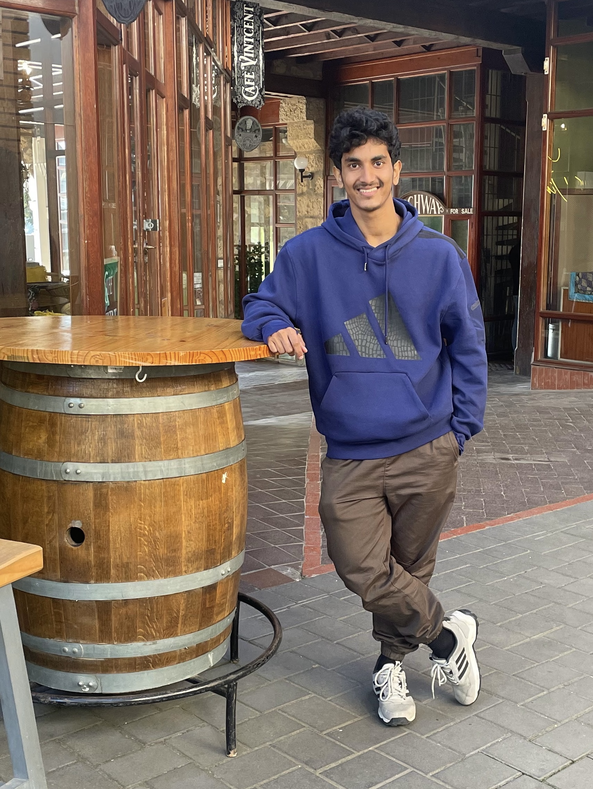

Garvit Sonawala
I am a Master student at IISER Thiruvananthapuram and concurrently pursuing a BS in Data Science from IIT Madras. My interests lie in the theoretical side of physics, I enjoy exploring ideas across cosmology, astroparticle physics, and quantum information theory without confining myself to a single niche. I’m also intrigued by how modern computational and data-driven approaches, including machine learning, can complement theory and help model complex physical systems.